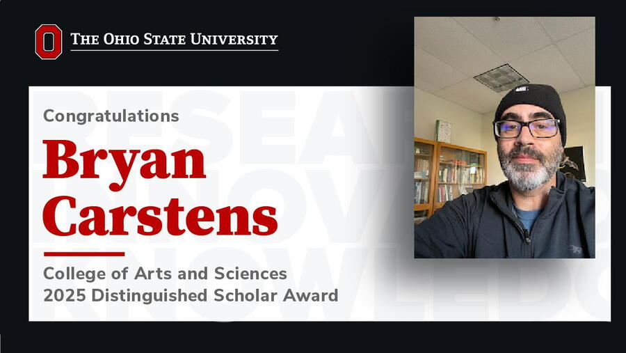

Bryan Carstens, PhD, professor of Evolution, Ecology and Organismal Biology and core contributor to the Imageomics Institute, has received The Ohio State University’s 2025 Distinguished Scholar Award, one of the university’s highest honors recognizing exceptional achievement.
Presented by the Enterprise for Research, Innovation and Knowledge (ERIK), the award celebrates faculty whose research has shaped their fields and brought distinction to Ohio State. Carstens was surprised with the honor by university leadership earlier this spring.
Carstens, a nationally renowned evolutionary biologist and AAAS Fellow, is a pivotal force within the Imageomics Institute, where he applies computational approaches to the discovery, delimitation, and understanding of species diversity. His work bridges traditional systematics with modern machine learning, advancing the Institute’s core mission: using AI to understand how traits evolve and how we define species across the tree of life.
“Bryan’s research is central to the Imageomics vision,” said Tanya Berger-Wolf, founding director of the Institute. “His contributions to quantitative species delimitation provide the biological rigor needed to train AI systems on what species are and how they change over time.”
Carstens’ research uses DNA sequence data and phylogenetic methods to infer the ecological and evolutionary forces that shape biodiversity. At Imageomics, his expertise helps guide machine learning models that extract biologically meaningful traits from images and genomic data—helping AI better reflect the complexities of life on Earth.
His methods are especially critical in discovering and describing cryptic species—organisms that look alike but are genetically distinct. This work not only transforms evolutionary biology but directly supports the goals of biodiversity conservation, ecosystem monitoring, and scientific reproducibility—three pillars of both Imageomics and ERIK’s research agenda.
“Professor Carstens’ work has changed how evolutionary biologists approach species discovery,” said Thomas Near of Yale University in the nomination. “He has introduced statistical rigor to species delimitation, opening new frontiers in how we understand biodiversity.”
Carstens is also widely respected for his mentorship, which ERIK senior leadership noted was a defining theme in his nomination.
“I’ve always thought the way to do good science is to empower your grad students and postdocs,” Carstens said, characteristically humble. “They did all the work. I just kind of took credit for it, I guess.”
His impact spans generations of scholars and researchers, many of whom now lead their own labs. He also currently serves as editor-in-chief of Systematic Biology and was a founding editor of the Bulletin of the Society of Systematic Biologists.
Looking ahead, Carstens and the Imageomics team are expanding their collaborative efforts across disciplines and continents—working to scale biodiversity insights through AI, citizen science, and open-access tools.
As the Earth faces accelerating species loss, the need for scalable, accurate biodiversity science has never been greater. Carstens’ work exemplifies how fundamental research, coupled with data-driven innovation, can help humanity better understand—and protect—the diversity of life on our planet.